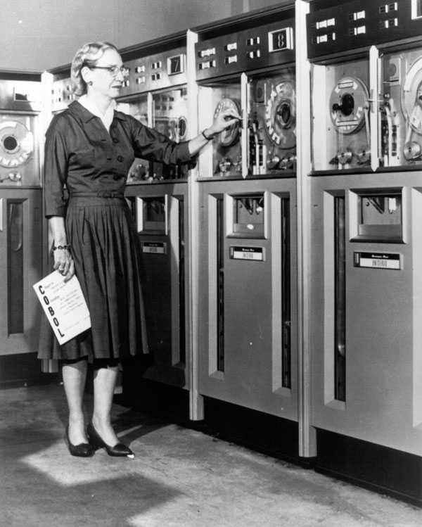

<div class="profile"><div>
  <div class="source">
FLOW-MATIC (1955)
  </div>
  <div class="detail">
    
    <div class="search"><a href="http://www.google.com/cse?cx=partner-pub-6997921015773263:4467526896&ie=UTF-8&q=Grace Hopper" target="_blank"></a> | <a href="http://en.wikipedia.org/wiki/Grace_Hopper" target="_blank">wiki</a></div>
    <div class="name">Grace Hopper</div>
    <div class="info">Rear Admiral <b>Grace Murray Hopper</b> (December 9, 1906 – January 1, 1992) was an American computer scientist and United States Navy officer. A pioneer in the field, she was one of the first programmers of the Harvard Mark I computer, and developed the first compiler for a computer programming language. She conceptualized the idea of machine-independent programming languages, which led to the development of COBOL, one of the first modern programming languages.
    <p><b><a href="http://en.wikipedia.org/wiki/FLOW-MATIC" target="_blank">FLOW-MATIC</a></b>, originally known as B-0 (Business Language version 0), was the first English-like data processing language.</p>
    </div>
  </div>
  <div class="photo">
    
  </div>
</div></div>